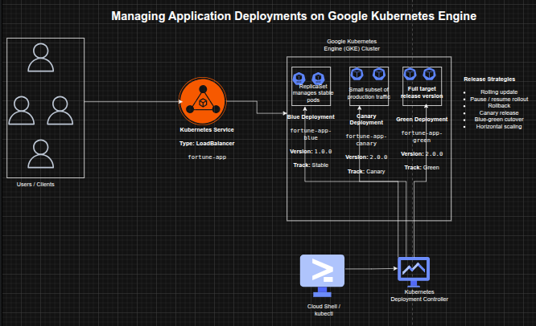

Managing Application Deployments on Google Kubernetes Engine
Managing Application Deployments on Google Kubernetes Engine
Timeline: December 2025
Role: Cloud Engineer / Site Reliability Engineer
Skills: Google Kubernetes Engine (GKE), Kubernetes, kubectl, Deployments, ReplicaSets, Services, Rolling Updates, Canary Deployments, Blue-Green Deployments, DevOps
Project Summary
This project focused on implementing production-grade deployment strategies for a containerized application on Google Kubernetes Engine (GKE). The work involved deploying a versioned application, exposing it via a Kubernetes Service, scaling workloads, and managing application updates using rolling updates, rollback, canary releases, and blue-green deployment patterns.
The implementation demonstrated how Kubernetes can be used not only for orchestration, but also as a release management platform, enabling safe, controlled, and low-risk application deployments in cloud-native environments.
Objectives
- Deploy a containerized application on GKE using Kubernetes manifests
- Use
kubectlto inspect and manage Kubernetes resources - Scale application replicas dynamically
- Perform rolling updates to a new application version
- Pause and resume deployment rollouts
- Roll back to a previous stable version
- Implement a canary deployment for partial traffic testing
- Implement a blue-green deployment for full traffic switching
Architecture Overview
The architecture consisted of:
- A Google Kubernetes Engine (GKE) cluster hosting application workloads
- A Kubernetes Deployment managing application replicas
- A ReplicaSet ensuring desired pod availability
- Multiple application versions:
- Blue (stable) – version 1.0.0
- Canary – partial rollout of version 2.0.0
- Green – full deployment of version 2.0.0
- A LoadBalancer Service exposing the application externally
- Traffic routing controlled via labels and selectors

Implementation & Highlights
1. GKE Cluster and Environment Setup
- Created a 3-node GKE cluster using
gcloud - Configured Cloud Shell and
kubectlfor cluster interaction - Loaded deployment and service manifests for the application
2. Initial Application Deployment
- Deployed
fortune-appversion 1.0.0 using a Kubernetes Deployment - Configured 3 replicas for high availability
- Verified Deployment, ReplicaSet, and Pods
- Exposed the application via a LoadBalancer Service
- Validated application response using the
/versionendpoint
3. Scaling Application Workloads
- Scaled replicas from 3 → 5 → 3 using
kubectl scale - Verified pod scaling behavior dynamically
- Demonstrated horizontal scalability using Kubernetes Deployments
4. Rolling Update Deployment
- Updated application image from v1.0.0 → v2.0.0
- Triggered a rolling update with zero downtime
- Observed:
- gradual replacement of pods
- creation of a new ReplicaSet
- Reviewed rollout history for deployment tracking
5. Controlled Rollout (Pause & Resume)
- Paused deployment rollout mid-update
- Observed mixed application versions running simultaneously
- Resumed rollout to complete update
- Demonstrated operational control over live deployments
6. Rollback to Stable Version
- Performed rollback using
kubectl rollout undo - Reverted application back to version 1.0.0
- Verified successful rollback through service responses
- Demonstrated safe recovery from faulty deployments
7. Canary Deployment Implementation
- Created a canary deployment for version 2.0.0
- Used shared service selectors to distribute traffic
- Verified:
- majority of traffic served by stable version
- small subset served by canary version
- Demonstrated controlled production testing
8. Blue-Green Deployment Strategy
- Created separate blue (v1.0.0) and green (v2.0.0) deployments
- Updated service selector to switch traffic between versions
- Verified:
- instant traffic cutover
- immediate rollback capability
- Demonstrated zero-downtime full release strategy
Design Decisions
- Used Kubernetes Deployments for declarative application management
- Leveraged ReplicaSets for automatic scaling and availability
- Used Services with label selectors to control traffic routing
- Applied multiple deployment strategies to simulate real-world release scenarios
- Chose GKE for managed Kubernetes infrastructure and scalability
Results & Impact
- Successfully implemented multiple production deployment strategies on GKE
- Demonstrated practical use of:
- rolling updates
- rollback mechanisms
- canary testing
- blue-green deployments
- Improved understanding of:
- release safety
- deployment control
- traffic management
- Built a strong foundation for cloud-native DevOps and SRE practices
Tools & Technologies Used
- Google Kubernetes Engine (GKE) – Managed Kubernetes platform
- Kubernetes – Container orchestration
- kubectl – Cluster management CLI
- Deployments & ReplicaSets – Workload management
- Services (LoadBalancer) – External access and traffic routing
- Containerized Application (fortune-app) – Sample workload
Outcome
This project demonstrates the ability to implement advanced Kubernetes deployment strategies in a cloud environment. It highlights practical skills in release engineering, workload scaling, traffic management, and failure recovery, which are critical for cloud engineering, DevOps, and site reliability roles.